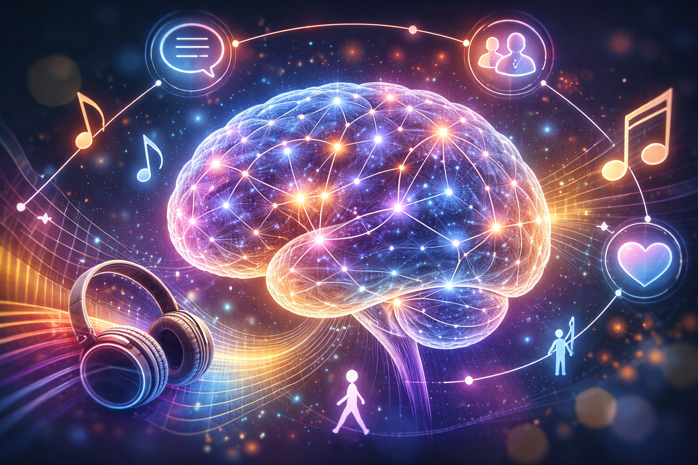
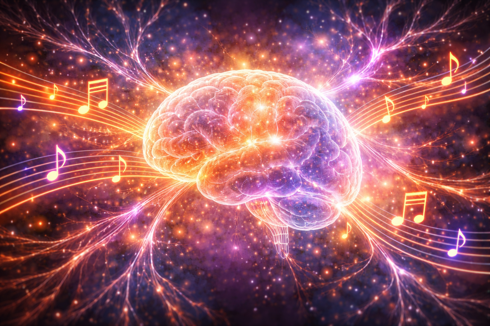

Whole-brain engagement
Music draws on auditory, emotional, cognitive, memory, and motor systems together rather than in isolation.
Music therapy is not only creative and relational. It is also neurological. Music engages multiple brain systems at the same time, helping support communication, emotional regulation, movement, attention, memory, and connection.
That is why music therapy can be meaningful across a wide range of settings, including mental health, neurodiversity, dementia care, rehabilitation, and child development.
Music draws on auditory, emotional, cognitive, memory, and motor systems together rather than in isolation.
Music can support expression and connection when words are hard to find, process, or use.
Rhythm, repetition, and improvisation give the brain both predictability and room for adaptation.

When a person listens to or creates music, the brain does not respond in just one place. Musical experience draws on networks involved in hearing, movement, attention, planning, emotion, and memory.
This matters because many people do not present with one isolated difficulty. Their needs may involve communication, sensory processing, emotional regulation, confidence, and physical coordination all at once. Music therapy is well suited to that complexity.
Music has a direct relationship with the brain’s emotional systems. Changes in tempo, pitch, rhythm, harmony, and dynamics can shape how alert, calm, focused, or emotionally open a person feels in the moment.
In therapy, this means music can help create a sense of safety, reduce overwhelm, support emotional processing, and offer a non-verbal route for expression when spoken language feels difficult or insufficient.
Music is strongly associated with autobiographical memory. A familiar song, rhythm, or sound can bring back emotion, recognition, and a sense of identity even when other memory functions are affected.
This is one reason music therapy can be especially valuable in dementia care and neurological support. Music can help people reconnect with personal history, relationships, and emotional meaning.
Music and language overlap in important ways. Rhythm supports timing and turn-taking, melody can reinforce pattern and structure, and shared musical interaction can create a communicative space without relying on spoken conversation alone.
In practice, this can support non-verbal communication, shared attention, listening, reciprocity, and the development of expressive and receptive communication skills.
The brain is naturally responsive to rhythm. Repeated beats and rhythmic patterns can support timing, coordination, sequencing, and physical engagement.
That is why rhythm can be a powerful therapeutic tool in rehabilitation, movement support, and developmental work. It gives the body an external structure to organise around.
The brain is capable of change. Repeated musical experiences can help strengthen pathways, reinforce learning, and support adaptation through practice, relationship, and patterned engagement.
Music therapy does not claim to “switch on” the brain in a simplistic way. What it can do is provide a structured, motivating, emotionally meaningful context that supports development, participation, and change.

This is what makes music therapy so distinctive. It combines neuroscience, clinical skill, creativity, and human connection in a single therapeutic process.